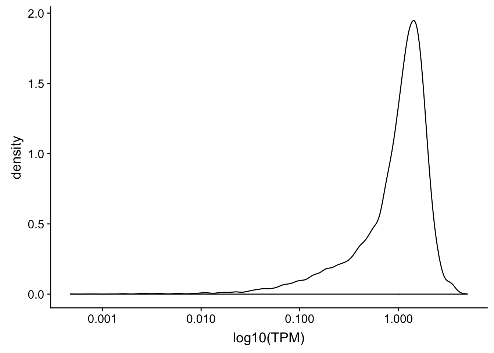
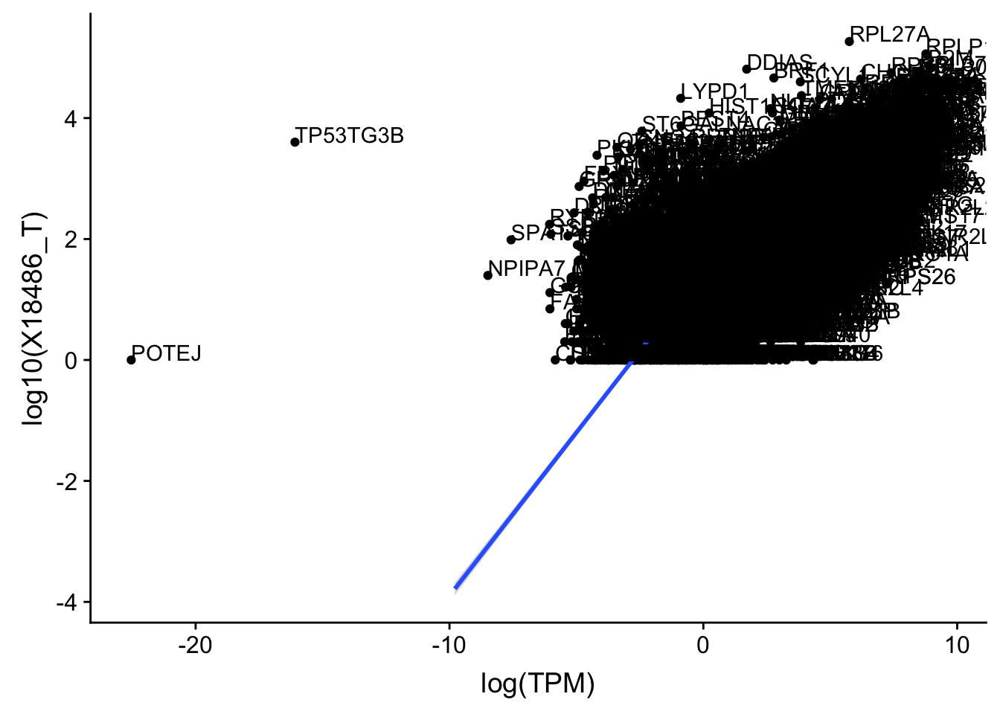
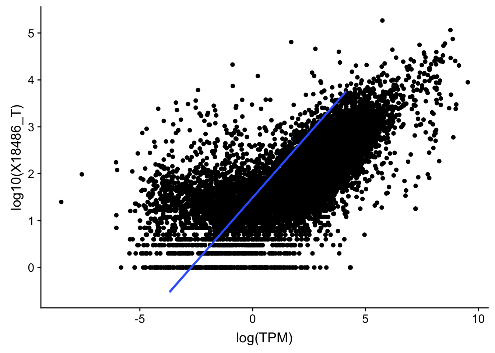
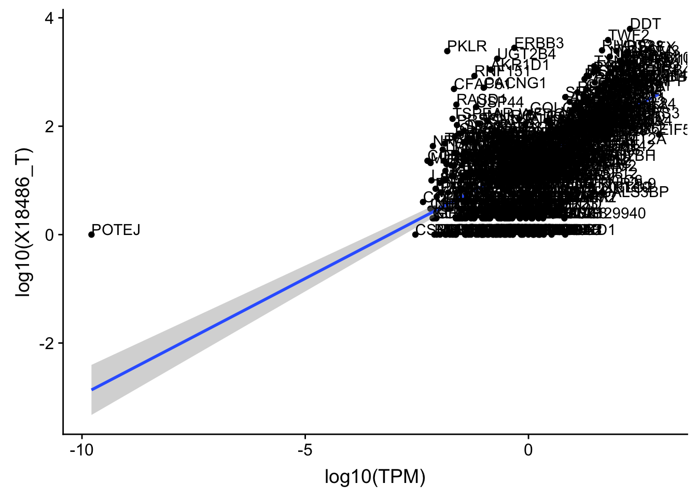
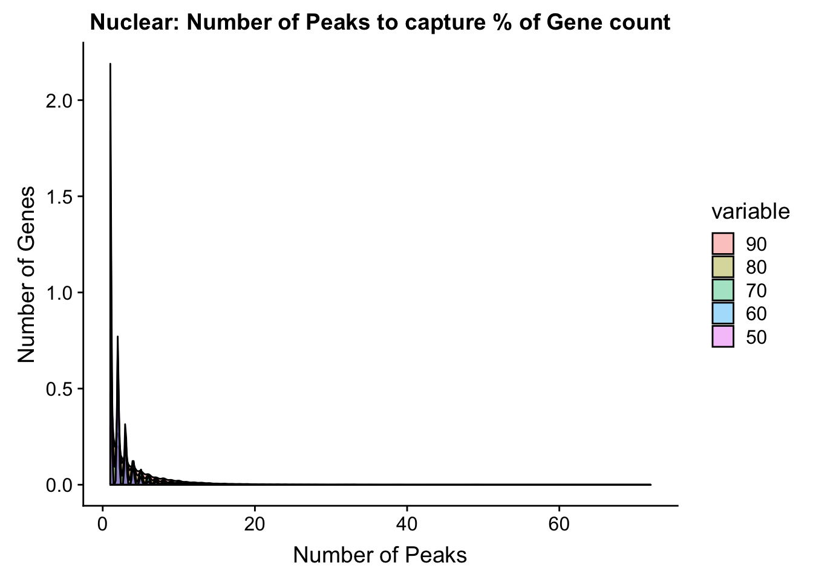

Understand Peaks
Briana Mittleman
12/5/2018
Last updated: 2018-12-07
workflowr checks: (Click a bullet for more information)-
✔ R Markdown file: up-to-date
Great! Since the R Markdown file has been committed to the Git repository, you know the exact version of the code that produced these results.
-
✔ Environment: empty
Great job! The global environment was empty. Objects defined in the global environment can affect the analysis in your R Markdown file in unknown ways. For reproduciblity it’s best to always run the code in an empty environment.
-
✔ Seed:
set.seed(12345)The command
set.seed(12345)was run prior to running the code in the R Markdown file. Setting a seed ensures that any results that rely on randomness, e.g. subsampling or permutations, are reproducible. -
✔ Session information: recorded
Great job! Recording the operating system, R version, and package versions is critical for reproducibility.
-
Great! You are using Git for version control. Tracking code development and connecting the code version to the results is critical for reproducibility. The version displayed above was the version of the Git repository at the time these results were generated.✔ Repository version: fa26526
Note that you need to be careful to ensure that all relevant files for the analysis have been committed to Git prior to generating the results (you can usewflow_publishorwflow_git_commit). workflowr only checks the R Markdown file, but you know if there are other scripts or data files that it depends on. Below is the status of the Git repository when the results were generated:
Note that any generated files, e.g. HTML, png, CSS, etc., are not included in this status report because it is ok for generated content to have uncommitted changes.Ignored files: Ignored: .DS_Store Ignored: .Rhistory Ignored: .Rproj.user/ Ignored: data/.DS_Store Ignored: output/.DS_Store Untracked files: Untracked: KalistoAbundance18486.txt Untracked: analysis/DirectionapaQTL.Rmd Untracked: analysis/ncbiRefSeq_sm.sort.mRNA.bed Untracked: analysis/snake.config.notes.Rmd Untracked: analysis/verifyBAM.Rmd Untracked: data/18486.genecov.txt Untracked: data/APApeaksYL.total.inbrain.bed Untracked: data/ChromHmmOverlap/ Untracked: data/GM12878.chromHMM.bed Untracked: data/GM12878.chromHMM.txt Untracked: data/LocusZoom/ Untracked: data/NuclearApaQTLs.txt Untracked: data/PeakCounts/ Untracked: data/PeaksUsed/ Untracked: data/RNAkalisto/ Untracked: data/TotalApaQTLs.txt Untracked: data/Totalpeaks_filtered_clean.bed Untracked: data/UnderstandPeaksQC/ Untracked: data/YL-SP-18486-T-combined-genecov.txt Untracked: data/YL-SP-18486-T_S9_R1_001-genecov.txt Untracked: data/apaExamp/ Untracked: data/bedgraph_peaks/ Untracked: data/bin200.5.T.nuccov.bed Untracked: data/bin200.Anuccov.bed Untracked: data/bin200.nuccov.bed Untracked: data/clean_peaks/ Untracked: data/comb_map_stats.csv Untracked: data/comb_map_stats.xlsx Untracked: data/comb_map_stats_39ind.csv Untracked: data/combined_reads_mapped_three_prime_seq.csv Untracked: data/diff_iso_trans/ Untracked: data/ensemble_to_genename.txt Untracked: data/example_gene_peakQuant/ Untracked: data/explainProtVar/ Untracked: data/filtered_APApeaks_merged_allchrom_refseqTrans.closest2End.bed Untracked: data/filtered_APApeaks_merged_allchrom_refseqTrans.closest2End.noties.bed Untracked: data/first50lines_closest.txt Untracked: data/gencov.test.csv Untracked: data/gencov.test.txt Untracked: data/gencov_zero.test.csv Untracked: data/gencov_zero.test.txt Untracked: data/gene_cov/ Untracked: data/joined Untracked: data/leafcutter/ Untracked: data/merged_combined_YL-SP-threeprimeseq.bg Untracked: data/mol_overlap/ Untracked: data/mol_pheno/ Untracked: data/nom_QTL/ Untracked: data/nom_QTL_opp/ Untracked: data/nom_QTL_trans/ Untracked: data/nuc6up/ Untracked: data/other_qtls/ Untracked: data/pQTL_otherphen/ Untracked: data/peakPerRefSeqGene/ Untracked: data/perm_QTL/ Untracked: data/perm_QTL_opp/ Untracked: data/perm_QTL_trans/ Untracked: data/perm_QTL_trans_filt/ Untracked: data/reads_mapped_three_prime_seq.csv Untracked: data/smash.cov.results.bed Untracked: data/smash.cov.results.csv Untracked: data/smash.cov.results.txt Untracked: data/smash_testregion/ Untracked: data/ssFC200.cov.bed Untracked: data/temp.file1 Untracked: data/temp.file2 Untracked: data/temp.gencov.test.txt Untracked: data/temp.gencov_zero.test.txt Untracked: output/picard/ Untracked: output/plots/ Untracked: output/qual.fig2.pdf Unstaged changes: Modified: analysis/28ind.peak.explore.Rmd Modified: analysis/apaQTLoverlapGWAS.Rmd Modified: analysis/cleanupdtseq.internalpriming.Rmd Modified: analysis/coloc_apaQTLs_protQTLs.Rmd Modified: analysis/dif.iso.usage.leafcutter.Rmd Modified: analysis/diff_iso_pipeline.Rmd Modified: analysis/explainpQTLs.Rmd Modified: analysis/explore.filters.Rmd Modified: analysis/flash2mash.Rmd Modified: analysis/overlapMolQTL.Rmd Modified: analysis/overlap_qtls.Rmd Modified: analysis/peakOverlap_oppstrand.Rmd Modified: analysis/pheno.leaf.comb.Rmd Modified: analysis/swarmPlots_QTLs.Rmd Modified: analysis/test.max2.Rmd Modified: code/Snakefile
Expand here to see past versions:
| File | Version | Author | Date | Message |
|---|---|---|---|---|
| Rmd | fa26526 | Briana Mittleman | 2018-12-07 | add filter correlation |
| html | 7848485 | Briana Mittleman | 2018-12-07 | Build site. |
| Rmd | 55c61ea | Briana Mittleman | 2018-12-07 | scatterplot TPM vs gene cov |
| html | 3cd438e | Briana Mittleman | 2018-12-06 | Build site. |
| Rmd | ddde22b | Briana Mittleman | 2018-12-06 | add peaks per feature plot |
| html | cdfa5b2 | Briana Mittleman | 2018-12-05 | Build site. |
| Rmd | 655b582 | Briana Mittleman | 2018-12-05 | PCA with batch and read count |
The goal of this analysis is to understand the data a bit better at the peak level. I want to have the cleanest set of peaks when I perform the final anlyses for the paper.
Variation in peaks
First I will run PCA on the peak coverage. I will run this seperatly for the total and nuclear fractions. I do not expect large amount of separation.
I will use the peak coverage data before the ratios are created for leafcutter. These files were created using feature counts on the filtered peaks. At this point the peaks have been mapped to the closest refseq transcript on the opposite strand.
Relevant file:
* /project2/gilad/briana/threeprimeseq/data/filtPeakOppstrand_cov/filtered_APApeaks_merged_allchrom_refseqGenes.Transcript_sm_quant.Total_fixed.fc
- /project2/gilad/briana/threeprimeseq/data/filtPeakOppstrand_cov/filtered_APApeaks_merged_allchrom_refseqGenes.Transcript_sm_quant.Nuclear_fixed.fc
These files are in /Users/bmittleman1/Documents/Gilad_lab/threeprimeseq/data/PeakCounts on my computer.
library(tidyverse)── Attaching packages ───────────────────────────────────────────────────────── tidyverse 1.2.1 ──✔ ggplot2 3.0.0 ✔ purrr 0.2.5
✔ tibble 1.4.2 ✔ dplyr 0.7.6
✔ tidyr 0.8.1 ✔ stringr 1.3.1
✔ readr 1.1.1 ✔ forcats 0.3.0── Conflicts ──────────────────────────────────────────────────────────── tidyverse_conflicts() ──
✖ dplyr::filter() masks stats::filter()
✖ dplyr::lag() masks stats::lag()library(workflowr)This is workflowr version 1.1.1
Run ?workflowr for help getting startedlibrary(cowplot)
Attaching package: 'cowplot'The following object is masked from 'package:ggplot2':
ggsavelibrary(reshape2)
Attaching package: 'reshape2'The following object is masked from 'package:tidyr':
smithslibrary(devtools)
library(tximport)Load data:
#only keep the counts
total_Cov=read.table("../data/PeakCounts/filtered_APApeaks_merged_allchrom_refseqGenes.Transcript_sm_quant.Total_fixed.fc", header=T, stringsAsFactors = F)[,7:45]
nuclear_Cov=read.table("../data/PeakCounts/filtered_APApeaks_merged_allchrom_refseqGenes.Transcript_sm_quant.Nuclear_fixed.fc", header=T, stringsAsFactors = F)[,7:45]Total:
Run PCA on the total coverage
pca_tot_peak=prcomp(total_Cov, center=T,scale=T)
summary(pca_tot_peak)Importance of components:
PC1 PC2 PC3 PC4 PC5 PC6
Standard deviation 5.9010 1.30000 0.81376 0.75658 0.47993 0.4501
Proportion of Variance 0.8929 0.04333 0.01698 0.01468 0.00591 0.0052
Cumulative Proportion 0.8929 0.93621 0.95319 0.96787 0.97378 0.9790
PC7 PC8 PC9 PC10 PC11 PC12
Standard deviation 0.42896 0.32313 0.30419 0.27984 0.23427 0.19916
Proportion of Variance 0.00472 0.00268 0.00237 0.00201 0.00141 0.00102
Cumulative Proportion 0.98369 0.98637 0.98874 0.99075 0.99216 0.99317
PC13 PC14 PC15 PC16 PC17 PC18
Standard deviation 0.18883 0.15913 0.15127 0.14309 0.12758 0.1254
Proportion of Variance 0.00091 0.00065 0.00059 0.00053 0.00042 0.0004
Cumulative Proportion 0.99409 0.99474 0.99532 0.99585 0.99626 0.9967
PC19 PC20 PC21 PC22 PC23 PC24
Standard deviation 0.12328 0.11035 0.10707 0.09979 0.09530 0.08797
Proportion of Variance 0.00039 0.00031 0.00029 0.00026 0.00023 0.00020
Cumulative Proportion 0.99706 0.99737 0.99766 0.99792 0.99815 0.99835
PC25 PC26 PC27 PC28 PC29 PC30
Standard deviation 0.08576 0.08086 0.07902 0.07535 0.07454 0.06907
Proportion of Variance 0.00019 0.00017 0.00016 0.00015 0.00014 0.00012
Cumulative Proportion 0.99854 0.99871 0.99887 0.99901 0.99916 0.99928
PC31 PC32 PC33 PC34 PC35 PC36
Standard deviation 0.06717 0.06441 0.06201 0.05666 0.05415 0.05261
Proportion of Variance 0.00012 0.00011 0.00010 0.00008 0.00008 0.00007
Cumulative Proportion 0.99939 0.99950 0.99960 0.99968 0.99976 0.99983
PC37 PC38 PC39
Standard deviation 0.05128 0.04839 0.04237
Proportion of Variance 0.00007 0.00006 0.00005
Cumulative Proportion 0.99989 0.99995 1.00000pca_tot_df=as.data.frame(pca_tot_peak$rotation) %>% rownames_to_column(var="lib") %>% mutate(line=substr(lib,2,6))
pca_tot_df$line=as.integer(pca_tot_df$line)I want to color these by library size.
map_stats=read.csv("../data/comb_map_stats_39ind.csv", header=T)
map_stat_total=map_stats %>% filter(fraction=="total")
map_stat_total$batch=as.factor(map_stat_total$batch)Join the relevant stats with the pca dataframe.
pca_tot_df=pca_tot_df %>% full_join(map_stat_total, by="line")Plot this PCA:
totPCA_batch=ggplot(pca_tot_df, aes(x=PC1, y=PC2, col=batch )) + geom_point() + labs(x="PC1:0.89", y="PC2:0.043", title="Raw PAS qunatification data Total \n colored by batch ")
ggsave("../output/plots/QC_plots/TotalPCA_colBatch.png",totPCA_batch)Saving 7 x 5 in imagetotPCA_mapped=ggplot(pca_tot_df, aes(x=PC1, y=PC2, col=comb_mapped )) + geom_point() + labs(x="PC1:0.89", y="PC2:0.043", title="Raw PAS qunatification data Total \n colored by Mapped Read count")
ggsave("../output/plots/QC_plots/TotalPCA_colMapped.png",totPCA_mapped)Saving 7 x 5 in imageNuclear
Run PCA on the Nuclear coverage
pca_nuc_peak=prcomp(nuclear_Cov, center=T,scale=T)
summary(pca_nuc_peak)Importance of components:
PC1 PC2 PC3 PC4 PC5 PC6
Standard deviation 5.3861 1.87775 1.62240 0.99268 0.92998 0.63513
Proportion of Variance 0.7438 0.09041 0.06749 0.02527 0.02218 0.01034
Cumulative Proportion 0.7438 0.83425 0.90174 0.92701 0.94919 0.95953
PC7 PC8 PC9 PC10 PC11 PC12
Standard deviation 0.53149 0.4674 0.4095 0.36160 0.32862 0.28960
Proportion of Variance 0.00724 0.0056 0.0043 0.00335 0.00277 0.00215
Cumulative Proportion 0.96677 0.9724 0.9767 0.98003 0.98280 0.98495
PC13 PC14 PC15 PC16 PC17 PC18
Standard deviation 0.26862 0.25414 0.2333 0.22825 0.20329 0.19277
Proportion of Variance 0.00185 0.00166 0.0014 0.00134 0.00106 0.00095
Cumulative Proportion 0.98680 0.98845 0.9899 0.99118 0.99224 0.99320
PC19 PC20 PC21 PC22 PC23 PC24
Standard deviation 0.18620 0.17247 0.16092 0.14244 0.13630 0.12741
Proportion of Variance 0.00089 0.00076 0.00066 0.00052 0.00048 0.00042
Cumulative Proportion 0.99409 0.99485 0.99551 0.99603 0.99651 0.99693
PC25 PC26 PC27 PC28 PC29 PC30
Standard deviation 0.12025 0.11377 0.11306 0.10563 0.10228 0.09219
Proportion of Variance 0.00037 0.00033 0.00033 0.00029 0.00027 0.00022
Cumulative Proportion 0.99730 0.99763 0.99796 0.99824 0.99851 0.99873
PC31 PC32 PC33 PC34 PC35 PC36
Standard deviation 0.08916 0.08768 0.08144 0.07916 0.07412 0.07253
Proportion of Variance 0.00020 0.00020 0.00017 0.00016 0.00014 0.00013
Cumulative Proportion 0.99893 0.99913 0.99930 0.99946 0.99960 0.99974
PC37 PC38 PC39
Standard deviation 0.06394 0.05721 0.05416
Proportion of Variance 0.00010 0.00008 0.00008
Cumulative Proportion 0.99984 0.99992 1.00000pca_nuc_df=as.data.frame(pca_nuc_peak$rotation) %>% rownames_to_column(var="lib") %>% mutate(line=substr(lib,2,6))
pca_nuc_df$line=as.integer(pca_nuc_df$line)I want to color these by library size.
map_stat_nuclear=map_stats %>% filter(fraction=="nuclear")
map_stat_nuclear$batch=as.factor(map_stat_nuclear$batch)Join the relevant stats with the pca dataframe.
pca_nuc_df=pca_nuc_df %>% full_join(map_stat_nuclear, by="line")Plot this PCA:
nucPCA_batch=ggplot(pca_nuc_df, aes(x=PC1, y=PC2, col=batch )) + geom_point() + labs(x="PC1: 0.74", y="PC2: 0.09", title="Raw PAS qunatification data nuclear \n colored by batch ")
ggsave("../output/plots/QC_plots/NuclearPCA_colBatch.png",nucPCA_batch)Saving 7 x 5 in imageThis shows that PC 2 is highly corrleated with batch,
nucPCA_mapped=ggplot(pca_nuc_df, aes(x=PC1, y=PC2, col=comb_mapped )) + geom_point() + labs(x="PC1: 0.74", y="PC2: 0.09", title="Raw PAS qunatification data nuclear \n colored by Mapped Read count")
ggsave("../output/plots/QC_plots/NuclearlPCA_colMapped.png",nucPCA_mapped)Saving 7 x 5 in imageQ: Do the PAS read number recapitulate gene expression as it should?
Plot: scatter plot + fit (x-axis: gene TPM, y-axis: gene normalized PAS counts) total/nuclear separate
The TPM measurements come from the kalisto run I did on 18486.
tx2gene=read.table("../data/RNAkalisto/ncbiRefSeq.txn2gene.txt" ,header= F, sep="\t", stringsAsFactors = F)
txi.kallisto.tsv <- tximport("../data/RNAkalisto/abundance.tsv", type = "kallisto", tx2gene = tx2gene)Note: importing `abundance.h5` is typically faster than `abundance.tsv`reading in files with read_tsv1
removing duplicated transcript rows from tx2gene
transcripts missing from tx2gene: 99
summarizing abundance
summarizing counts
summarizing lengthI need to get all of the peaks for 18486 and which gene they are in. Then I will take the gene average and divide by the number of mapped reads.
total_Cov_18486=read.table("../data/PeakCounts/filtered_APApeaks_merged_allchrom_refseqGenes.Transcript_sm_quant.Total_fixed.fc", header=T, stringsAsFactors = F)[,1:7] %>% separate(Geneid, into=c("peak", "chr", "start", "end", "strand", "gene"), sep=":") %>% select(gene, X18486_T) %>% group_by(gene) %>% summarize(GeneSum=sum(X18486_T)) %>% mutate(NormGenePeakCov=GeneSum/10819437)Join with the transcript TPM
TXN_abund=as.data.frame(txi.kallisto.tsv$abundance) %>% rownames_to_column(var="gene")
colnames(TXN_abund)=c("gene", "TPM")
TXN_NormGene=TXN_abund %>% inner_join(total_Cov_18486,by="gene")Plot distribution of each variable seperatly first to understand distribution:
summary(TXN_abund$TPM) Min. 1st Qu. Median Mean 3rd Qu. Max.
0.00 0.02 1.03 36.87 14.21 101438.00 summary(TXN_abund$TPM+ .001) Min. 1st Qu. Median Mean 3rd Qu. Max.
0.00 0.02 1.03 36.87 14.21 101438.00 ggplot(TXN_abund, aes(x=TPM + .001)) + geom_density(kernel="gaussian") + scale_x_log10()
Expand here to see past versions of unnamed-chunk-15-1.png:
| Version | Author | Date |
|---|---|---|
| 7848485 | Briana Mittleman | 2018-12-07 |
summary(total_Cov_18486$NormGenePeakCov) Min. 1st Qu. Median Mean 3rd Qu. Max.
0.000e+00 1.756e-06 1.423e-05 5.382e-05 4.464e-05 1.708e-02 ggplot(total_Cov_18486, aes(x=NormGenePeakCov)) + geom_density(kernel="gaussian")+ scale_x_log10()Warning: Transformation introduced infinite values in continuous x-axisWarning: Removed 1955 rows containing non-finite values (stat_density).
Expand here to see past versions of unnamed-chunk-16-1.png:
| Version | Author | Date |
|---|---|---|
| 7848485 | Briana Mittleman | 2018-12-07 |
Create a scatterplot:
ggplot(TXN_NormGene, aes(x=TPM, y= NormGenePeakCov)) + geom_point() + geom_smooth(aes(x = TPM, y = NormGenePeakCov),method = "lm",se=T) + labs(title="Total 3' Libraries", x="RNA seq TPM", y="Normalized Peaks")Expand here to see past versions of unnamed-chunk-17-1.png:
| Version | Author | Date |
|---|---|---|
| 7848485 | Briana Mittleman | 2018-12-07 |
| 3cd438e | Briana Mittleman | 2018-12-06 |
summary(lm(TPM~NormGenePeakCov,TXN_NormGene))
Call:
lm(formula = TPM ~ NormGenePeakCov, data = TXN_NormGene)
Residuals:
Min 1Q Median 3Q Max
-8652.8 -23.6 -20.6 -13.2 13409.8
Coefficients:
Estimate Std. Error t value Pr(>|t|)
(Intercept) 20.71 2.30 9.003 <2e-16 ***
NormGenePeakCov 523774.61 8749.97 59.860 <2e-16 ***
---
Signif. codes: 0 '***' 0.001 '**' 0.01 '*' 0.05 '.' 0.1 ' ' 1
Residual standard error: 279.7 on 15415 degrees of freedom
Multiple R-squared: 0.1886, Adjusted R-squared: 0.1886
F-statistic: 3583 on 1 and 15415 DF, p-value: < 2.2e-16Maybe I need to get rid of the outliers. To do this I can look at the boxplots.
TXN_NormGene_melt = TXN_NormGene %>% select(gene, TPM, NormGenePeakCov) %>% melt(., id.vars="gene")ggplot(TXN_NormGene_melt, aes(x=variable, y=value)) + geom_boxplot() + scale_y_log10()Warning: Transformation introduced infinite values in continuous y-axisWarning: Removed 3097 rows containing non-finite values (stat_boxplot).
Expand here to see past versions of unnamed-chunk-19-1.png:
| Version | Author | Date |
|---|---|---|
| 7848485 | Briana Mittleman | 2018-12-07 |
| 3cd438e | Briana Mittleman | 2018-12-06 |
Let me try this with the nuclear fraction:
nuclear_Cov_18486=read.table("../data/PeakCounts/filtered_APApeaks_merged_allchrom_refseqGenes.Transcript_sm_quant.Nuclear_fixed.fc", header=T, stringsAsFactors = F)[,1:7] %>% separate(Geneid, into=c("peak", "chr", "start", "end", "strand", "gene"), sep=":") %>% select(gene, X18486_N) %>% group_by(gene) %>% summarize(GeneSum=sum(X18486_N)) %>% mutate(NormGenePeakCov=GeneSum/11405271)
TXN_NormGene_Nuc=TXN_abund %>% inner_join(nuclear_Cov_18486,by="gene")Create a scatterplot:
ggplot(TXN_NormGene_Nuc, aes(x=TPM, y= NormGenePeakCov)) + geom_point() + geom_smooth(aes(x = TPM, y = NormGenePeakCov),method = "lm",se=T) + labs(title="Nuclear 3' Libraries", x="RNA seq TPM", y="Normalized Peaks") Expand here to see past versions of unnamed-chunk-21-1.png:
| Version | Author | Date |
|---|---|---|
| 7848485 | Briana Mittleman | 2018-12-07 |
Try filtering
I want to fitler out the lowly expressed genes. I can use a cuttoff of TPM 10 because this is where the distribution starts to look normal.
TXN_abund_filter=TXN_abund %>% filter(TPM>10)
ggplot(TXN_abund_filter, aes(x=TPM)) + geom_density() + scale_x_log10()Filter the Total peaks
total_Cov_18486_filt=total_Cov_18486 %>% filter(NormGenePeakCov>.00001)
ggplot(total_Cov_18486_filt, aes(x=NormGenePeakCov)) + geom_density(kernel="gaussian")+ scale_x_log10()Filter nuclear
ggplot(nuclear_Cov_18486, aes(x=NormGenePeakCov)) + geom_density() + scale_x_log10()Warning: Transformation introduced infinite values in continuous x-axisWarning: Removed 763 rows containing non-finite values (stat_density).
nuclear_Cov_18486_filter=nuclear_Cov_18486 %>% filter(NormGenePeakCov>.00001)
ggplot(nuclear_Cov_18486_filter, aes(x=NormGenePeakCov)) + geom_density() + scale_x_log10()
TXN_NormGene_TotFilt=TXN_abund_filter %>% inner_join(total_Cov_18486_filt,by="gene")
ggplot(TXN_NormGene_TotFilt, aes(x=TPM, y= NormGenePeakCov)) + geom_point() + geom_smooth(aes(x = TPM, y = NormGenePeakCov),method = "lm",se=T) + labs(title="Total 3' Libraries- filtered TPM 5", x="RNA seq TPM", y="Normalized Peaks")summary(lm(TPM~NormGenePeakCov,TXN_NormGene_TotFilt))
Call:
lm(formula = TPM ~ NormGenePeakCov, data = TXN_NormGene_TotFilt)
Residuals:
Min 1Q Median 3Q Max
-8789.2 -57.3 -43.1 -23.4 13375.6
Coefficients:
Estimate Std. Error t value Pr(>|t|)
(Intercept) 4.963e+01 5.428e+00 9.143 <2e-16 ***
NormGenePeakCov 5.301e+05 1.382e+04 38.358 <2e-16 ***
---
Signif. codes: 0 '***' 0.001 '**' 0.01 '*' 0.05 '.' 0.1 ' ' 1
Residual standard error: 422.9 on 6583 degrees of freedom
Multiple R-squared: 0.1827, Adjusted R-squared: 0.1825
F-statistic: 1471 on 1 and 6583 DF, p-value: < 2.2e-16Nuclear
TXN_NormGene_NucFilt=TXN_abund_filter %>% inner_join(nuclear_Cov_18486_filter,by="gene")
ggplot(TXN_NormGene_NucFilt, aes(x=TPM, y= NormGenePeakCov)) + geom_point() + geom_smooth(aes(x = TPM, y = NormGenePeakCov),method = "lm",se=T) + labs(title="Nuclear 3' Libraries- filtered TPM 5", x="RNA seq TPM", y="Normalized Peaks")Expand here to see past versions of unnamed-chunk-26-1.png:
| Version | Author | Date |
|---|---|---|
| 7848485 | Briana Mittleman | 2018-12-07 |
| 3cd438e | Briana Mittleman | 2018-12-06 |
summary(lm(TPM~NormGenePeakCov,TXN_NormGene_NucFilt))
Call:
lm(formula = TPM ~ NormGenePeakCov, data = TXN_NormGene_NucFilt)
Residuals:
Min 1Q Median 3Q Max
-3952.3 -74.5 -59.0 -34.1 13743.6
Coefficients:
Estimate Std. Error t value Pr(>|t|)
(Intercept) 6.820e+01 6.014e+00 11.34 <2e-16 ***
NormGenePeakCov 3.754e+05 2.185e+04 17.18 <2e-16 ***
---
Signif. codes: 0 '***' 0.001 '**' 0.01 '*' 0.05 '.' 0.1 ' ' 1
Residual standard error: 454.4 on 6580 degrees of freedom
Multiple R-squared: 0.04292, Adjusted R-squared: 0.04278
F-statistic: 295.1 on 1 and 6580 DF, p-value: < 2.2e-16TXN_NormGene_fiter_melt = TXN_NormGene_TotFilt %>% select(gene, TPM, NormGenePeakCov) %>% melt(., id.vars="gene")
ggplot(TXN_NormGene_fiter_melt, aes(x=variable, y=value)) + geom_boxplot() + scale_y_log10()TXN_NormGene_Nuclear_fiter_melt = TXN_NormGene_NucFilt %>% select(gene, TPM, NormGenePeakCov) %>% melt(., id.vars="gene")
ggplot(TXN_NormGene_Nuclear_fiter_melt, aes(x=variable, y=value)) + geom_boxplot() + scale_y_log10() This could be due to genes that we do not expect to have polyA tails? Not sure what is going on.
Q: For each gene, what percentage of reads assigned fall within 1, 2, 3, etc… peaks, we would expect that for many genes >90% of the reads fall within 1 peak, for a few 2 peaks, etc…?
Plot: Y-axis: Number of genes, X-axis: how many peaks is needed to “capture” 90%, 80%, … 50% of the reads assigned to that gene (using different colors).
Q: What % of reads are assigned to a peak? Of these, what % of reads are assigned to a gene?
Within 50bp of an exon (more relevant for total)?
I want to know the percent of reads that are assigned to our peaks. I can get this information from the peak feature counts summaries. In order to look at the reads assigned to genes I will need to use feature counts with the gene annotation file.
- File: /project2/gilad/briana/threeprimeseq/data/filtPeakOppstrand_cov/filtered_APApeaks_merged_allchrom_refseqGenes.Transcript_sm_quant.fc.summary
Feature count takes in the bam files and an SAF annotation. For this one I used the peaks woth the transcript level annotation. I will fix the column names with python.
fix_fc_summary.py
infile= open("/Users/bmittleman1/Documents/Gilad_lab/threeprimeseq/data/UnderstandPeaksQC/filtered_APApeaks_merged_allchrom_refseqGenes.Transcript_sm_quant.fc.summary", "r")
fout = open("/Users/bmittleman1/Documents/Gilad_lab/threeprimeseq/data/UnderstandPeaksQC/filtered_APApeaks_merged_allchrom_refseqGenes.Transcript_sm_quant.fc.summary_fixed",'w')
for line, i in enumerate(infile):
if line == 0:
i_list=i.split()
libraries=[i_list[0]]
for sample in i_list[1:]:
full = sample.split("/")[7]
samp= full.split("-")[2:4]
lim="_"
samp_st=lim.join(samp)
libraries.append(samp_st)
print(libraries)
first_line= "\t".join(libraries)
fout.write(first_line + '\n' )
else:
fout.write(i)
fout.close()I care about Unassigned_NoFeatures and Assigned. These numbers add to the number of reads that map to the genome.
fc_peaks=read.table("../data/UnderstandPeaksQC/filtered_APApeaks_merged_allchrom_refseqGenes.Transcript_sm_quant.fc.summary_fixed", stringsAsFactors = F) %>% t()
fc_peaks=as.data.frame(fc_peaks)
colnames(fc_peaks)=as.character(unlist(fc_peaks[1,]))
fc_peaks=fc_peaks[-1,]
fc_peaks$Assigned=as.numeric(as.character(fc_peaks$Assigned))
fc_peaks$Unassigned_NoFeatures=as.numeric(as.character(fc_peaks$Unassigned_NoFeatures))I need to separate the libraries by line and fraction.
fc_peaks=fc_peaks %>% separate(Status, into=c("line", "fraction"), sep="_") %>% mutate(PerReadPeak=Assigned/(Assigned+Unassigned_NoFeatures))This number is the reads assigned to peaks out of all reads mapping to genome.
I can now melt these data by line and fraction
fc_peaks_melt=melt(fc_peaks, id.vars = c("line", "fraction"))Warning: attributes are not identical across measure variables; they will
be droppedfc_peaks_melt_PerRead=fc_peaks_melt %>% filter(variable=="PerReadPeak")
fc_peaks_melt_PerRead$value=as.numeric(fc_peaks_melt_PerRead$value)ggplot(fc_peaks_melt_PerRead,aes( x=line, y=value, by=fraction, fill=fraction))+ geom_col(pos="dodge") +theme(axis.text.x = element_text(angle = 90, hjust = 1),axis.text.y = element_text(size=12),axis.title.y=element_text(size=10,face="bold"), axis.title.x=element_text(size=12,face="bold"))+ scale_fill_manual(values=c("deepskyblue3","darkviolet")) + labs(title="Percent of reads mapping to peaks by line and fraction", y="Reads mapping to peaks/all mapping reads")
It may be more interesting to look at this by fraction, with error bars.
fc_peaks_melt_PerRead_byfrac= fc_peaks_melt_PerRead %>% group_by(fraction) %>% summarise(mean=mean(value), sd=sd(value))Plot this:
ggplot(fc_peaks_melt_PerRead_byfrac,aes(x=fraction, y=mean, fill=fraction)) + geom_col()+ geom_errorbar(aes(ymin=mean-sd, ymax=mean+sd), width=.2)+ theme(axis.text.y = element_text(size=12),axis.title.y=element_text(size=10,face="bold"), axis.title.x=element_text(size=12,face="bold"))+ scale_fill_manual(values=c("deepskyblue3","darkviolet"))+ labs(title="Percent of reads mapping to peaks by fraction", y="Reads mapping to peaks/all mapping reads")
Now I want to look at how many reads map to gene. I will use the transcript annotations that I used for the peaks.
- /project2/gilad/briana/genome_anotation_data/ncbiRefSeq_sm_noChr.sort.mRNA.bed
I need to make this an SAF file.
* GeneID * Chr * Start * End * Strand
RefSeqmRNA2SAF.py
#python
from misc_helper import *
fout = file("/project2/gilad/briana/genome_anotation_data/ncbiRefSeq_sm_noChr.sort.mRNA.SAF","w")
fout.write("GeneID\tChr\tStart\tEnd\tStrand\n")
for ln in open("/project2/gilad/briana/genome_anotation_data/ncbiRefSeq_sm_noChr.sort.mRNA.bed"):
chrom, start, end, gene, score, strand = ln.split()
start_i=int(start)
end_i=int(end)
fout.write("%s\t%s\t%d\t%d\t%s\n"%(gene, chrom, start_i, end_i, strand))
fout.close()ref_geneTranscript_fc.sh
#!/bin/bash
#SBATCH --job-name=ref_geneTranscript_fc
#SBATCH --account=pi-yangili1
#SBATCH --time=24:00:00
#SBATCH --output=ref_geneTranscript_fc.out
#SBATCH --error=ref_geneTranscript_fc.err
#SBATCH --partition=broadwl
#SBATCH --mem=12G
#SBATCH --mail-type=END
module load Anaconda3
source activate three-prime-env
featureCounts -O -a /project2/gilad/briana/genome_anotation_data/ncbiRefSeq_sm_noChr.sort.mRNA.SAF -F SAF -o /project2/gilad/briana/threeprimeseq/data/UnderstandPeaksQC/RefSeqTranscript_AllLibraries.fc /project2/gilad/briana/threeprimeseq/data/sort/*sort.bam -s 2fix_Genefc_summary.py
infile= open("/Users/bmittleman1/Documents/Gilad_lab/threeprimeseq/data/UnderstandPeaksQC/RefSeqTranscript_AllLibraries.fc.summary", "r")
fout = open("/Users/bmittleman1/Documents/Gilad_lab/threeprimeseq/data/UnderstandPeaksQC/RefSeqTranscript_AllLibraries.fc.summary_fixed",'w')
for line, i in enumerate(infile):
if line == 0:
i_list=i.split()
libraries=[i_list[0]]
for sample in i_list[1:]:
full = sample.split("/")[7]
samp= full.split("-")[2:4]
lim="_"
samp_st=lim.join(samp)
libraries.append(samp_st)
print(libraries)
first_line= "\t".join(libraries)
fout.write(first_line + '\n' )
else:
fout.write(i)
fout.close()fc_gene_peaks=read.table("../data/UnderstandPeaksQC/RefSeqTranscript_AllLibraries.fc.summary_fixed", stringsAsFactors = F) %>% t()
fc_gene_peaks=as.data.frame(fc_gene_peaks)
colnames(fc_gene_peaks)=as.character(unlist(fc_gene_peaks[1,]))
fc_gene_peaks=fc_gene_peaks[-1,]
fc_gene_peaks$Assigned=as.numeric(as.character(fc_gene_peaks$Assigned))
fc_gene_peaks$Unassigned_NoFeatures=as.numeric(as.character(fc_gene_peaks$Unassigned_NoFeatures))I need to separate the libraries by line and fraction.
fc_gene_peaks=fc_gene_peaks %>% separate(Status, into=c("line", "fraction"), sep="_") %>% mutate(PerReadPeak=Assigned/(Assigned+Unassigned_NoFeatures))Melt this:
fc_gene_peaks_melt=melt(fc_gene_peaks, id.vars = c("line", "fraction"))Warning: attributes are not identical across measure variables; they will
be droppedfc_gene_peaks_PerRead=fc_gene_peaks_melt %>% filter(variable=="PerReadPeak")
fc_gene_peaks_PerRead$value=as.numeric(fc_gene_peaks_PerRead$value)GGplot:
ggplot(fc_gene_peaks_PerRead,aes( x=line, y=value, by=fraction, fill=fraction))+ geom_col(pos="dodge") +theme(axis.text.x = element_text(angle = 90, hjust = 1),axis.text.y = element_text(size=12),axis.title.y=element_text(size=10,face="bold"), axis.title.x=element_text(size=12,face="bold"))+ scale_fill_manual(values=c("deepskyblue3","darkviolet")) + labs(title="Percent of reads mapping to Transcripts by line and fraction", y="Reads mapping to transcripts/all mapping reads")
Do this by fraction.
fc_gene_peaks_PerRead_byfrac= fc_gene_peaks_PerRead %>% group_by(fraction) %>% summarise(mean=mean(value), sd=sd(value))Plot this:
ggplot(fc_gene_peaks_PerRead_byfrac,aes(x=fraction, y=mean, fill=fraction)) + geom_col()+ geom_errorbar(aes(ymin=mean-sd, ymax=mean+sd), width=.2)+ theme(axis.text.y = element_text(size=12),axis.title.y=element_text(size=10,face="bold"), axis.title.x=element_text(size=12,face="bold"))+ scale_fill_manual(values=c("deepskyblue3","darkviolet"))+ labs(title="Percent of reads mapping to Transcripts by fraction", y="Reads mapping to Transcripts/all mapping reads")
It would be nice to have this in one plot. In order to do this I want to join the PerReadPeak from both and melt. this way the variable can be peak or transcript.
fc_peaks_sel=fc_peaks %>% select(c("line", "fraction", "PerReadPeak"))
fc_gene_peaks_sel=fc_gene_peaks %>% select(c("line", "fraction", "PerReadPeak"))
fcGene_and_Transcript=fc_peaks_sel %>% left_join(fc_gene_peaks_sel, by=c("line","fraction"))
colnames(fcGene_and_Transcript)=c("Line", "Fraction", "Peaks", "Genes")
fcGene_and_Transcript_melt=melt(fcGene_and_Transcript, id.vars=c("Line","Fraction"))
fcGene_and_Transcript_melt_sum=fcGene_and_Transcript_melt %>% group_by(Fraction,variable) %>% summarise(mean=mean(value), sd=sd(value))reads2featuresPlot=ggplot(fcGene_and_Transcript_melt_sum,aes(x=Fraction, y=mean, fill=Fraction)) + geom_col()+ geom_errorbar(aes(ymin=mean-sd, ymax=mean+sd), width=.2)+ theme(axis.text.y = element_text(size=12),axis.title.y=element_text(size=10,face="bold"), axis.title.x=element_text(size=12,face="bold"))+ scale_fill_manual(values=c("deepskyblue3","darkviolet"))+ labs(title="Percent of reads mapping to feature by fraction", y="Reads mapping to Feature/all mapping reads") + facet_grid(~variable)
reads2featuresPlotggsave(file="../output/plots/QC_plots/reads2featuresPlot.png", reads2featuresPlot)Saving 7 x 5 in imageSession information
sessionInfo()R version 3.5.1 (2018-07-02)
Platform: x86_64-apple-darwin15.6.0 (64-bit)
Running under: macOS 10.14.1
Matrix products: default
BLAS: /Library/Frameworks/R.framework/Versions/3.5/Resources/lib/libRblas.0.dylib
LAPACK: /Library/Frameworks/R.framework/Versions/3.5/Resources/lib/libRlapack.dylib
locale:
[1] en_US.UTF-8/en_US.UTF-8/en_US.UTF-8/C/en_US.UTF-8/en_US.UTF-8
attached base packages:
[1] stats graphics grDevices utils datasets methods base
other attached packages:
[1] bindrcpp_0.2.2 tximport_1.8.0 devtools_1.13.6 reshape2_1.4.3
[5] cowplot_0.9.3 workflowr_1.1.1 forcats_0.3.0 stringr_1.3.1
[9] dplyr_0.7.6 purrr_0.2.5 readr_1.1.1 tidyr_0.8.1
[13] tibble_1.4.2 ggplot2_3.0.0 tidyverse_1.2.1
loaded via a namespace (and not attached):
[1] tidyselect_0.2.4 haven_1.1.2 lattice_0.20-35
[4] colorspace_1.3-2 htmltools_0.3.6 yaml_2.2.0
[7] rlang_0.2.2 R.oo_1.22.0 pillar_1.3.0
[10] glue_1.3.0 withr_2.1.2 R.utils_2.7.0
[13] modelr_0.1.2 readxl_1.1.0 bindr_0.1.1
[16] plyr_1.8.4 munsell_0.5.0 gtable_0.2.0
[19] cellranger_1.1.0 rvest_0.3.2 R.methodsS3_1.7.1
[22] memoise_1.1.0 evaluate_0.11 labeling_0.3
[25] knitr_1.20 broom_0.5.0 Rcpp_0.12.19
[28] scales_1.0.0 backports_1.1.2 jsonlite_1.5
[31] hms_0.4.2 digest_0.6.17 stringi_1.2.4
[34] grid_3.5.1 rprojroot_1.3-2 cli_1.0.1
[37] tools_3.5.1 magrittr_1.5 lazyeval_0.2.1
[40] crayon_1.3.4 whisker_0.3-2 pkgconfig_2.0.2
[43] xml2_1.2.0 lubridate_1.7.4 assertthat_0.2.0
[46] rmarkdown_1.10 httr_1.3.1 rstudioapi_0.8
[49] R6_2.3.0 nlme_3.1-137 git2r_0.23.0
[52] compiler_3.5.1
This reproducible R Markdown analysis was created with workflowr 1.1.1